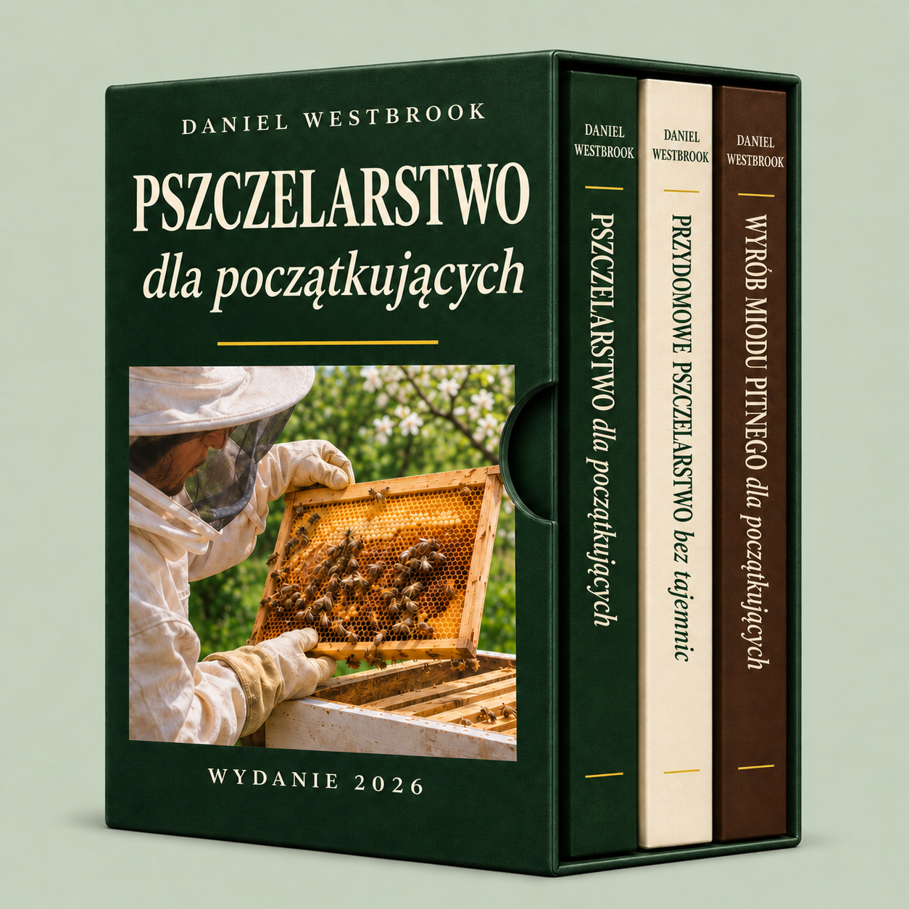

KOLEKCJA DANIELA WESTBROOKA
Od pierwszej rodziny pszczelej do własnego miodu.

Zrozum. Obserwuj. Rozwijaj się.
TWOJA STREFA UŻYTKOWNIKA
Twoja przygoda
Twoja przygoda
z pszczołami
zaczyna się tutaj.
Dobrze, że jesteś. Odkryj świat pszczół z wiedzą, która towarzyszy Ci od pierwszego kroku.
TWOJA OSOBISTA BIBLIOTEKA
Wejdź do swojej strefy
Poznaj podstawy. Prowadź pasiekę w ogrodzie. Odkryj sztukę wyrobu miodu pitnego.
Czytaj wszystkie trzy książki online lub pobierz pliki PDF.
- 3
- Książki
- 180
- stron wiedzy
- Twoje tempo
- Dla początkujących